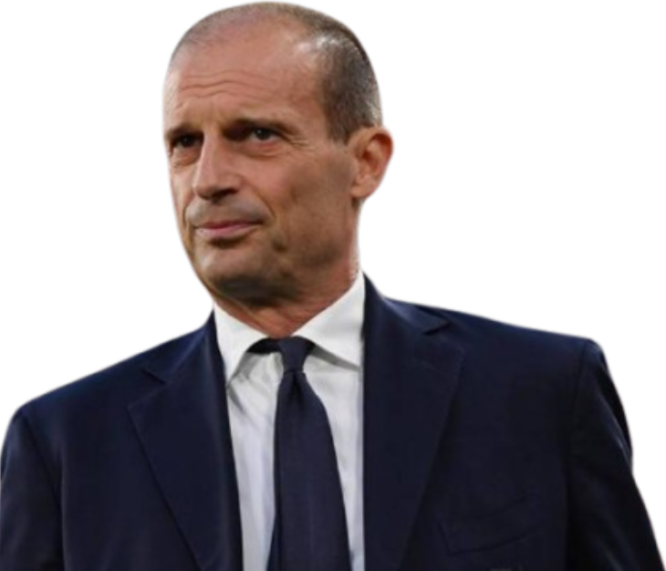
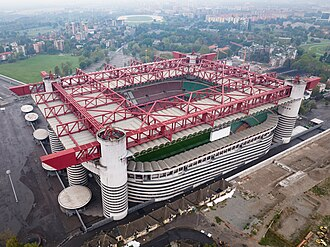

Treinador: Massimiliano Allegri
A trajetória de Massimiliano Allegri no AC Milan foi definida por uma assinalável maturidade estratégica e uma extraordinária capacidade de gestão competitiva, afirmando-se como um treinador de perfil pragmático, astuto e de um rigor tático cirúrgico.

Estádio: San Siro
A imponência do Estádio San Siro é definida por uma herança arquitetónica monumental e uma atmosfera visceral inigualável, afirmando-se como um palco de perfil lendário, intemporal e emocionalmente avassalador.

Estilo de Jogo:
O estilo de jogo de Massimiliano Allegri, quer na sua icónica primeira passagem pelo AC Milan quer na sua identidade geral como treinador, é pautado pelo pragmatismo, flexibilidade tática e equilíbrio. Allegri não é um ideólogo preso a um sistema fixo; ele adapta a equipa às características dos jogadores disponíveis e às exigências do adversário.
"Sempre Milan!"